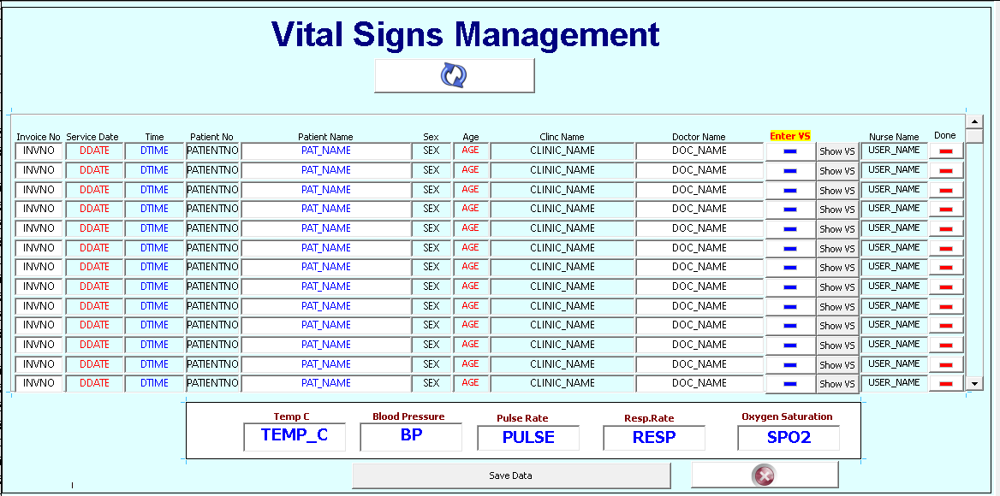

1. إدارة العلامات الحيوية
1. Vital Signs Management
الدور: تصميم وبرمجة كاملة
Role: Fully Designed & Developed
شاشة لفريق التمريض لإدخال الحرارة وضغط الدم والنبض ومعدل التنفس وتشبع الأكسجين، ثم ربطها بكشفية المريض لتظهر للطبيب أثناء المعاينة.
A nursing workflow screen for capturing temperature, blood pressure, pulse, respiratory rate, and oxygen saturation, linked directly to the patient encounter for physician access.
- تقليل التسجيل اليدوي.
- ربط البيانات بالكشفية.
- تحسين توفر المعلومات السريرية للطبيب.
- Reduced manual documentation.
- Linked observations to the patient encounter.
- Improved availability of clinical data to physicians.